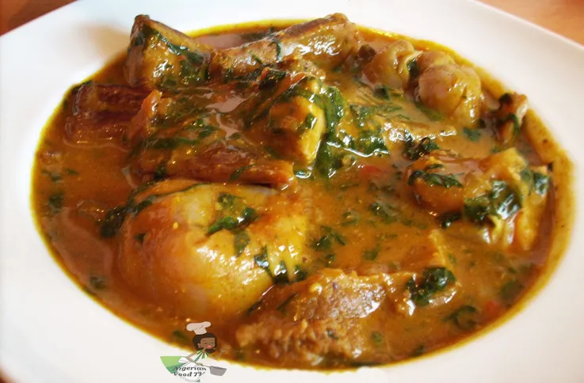

Ogbono Soup

Are you ready for Drawy Drawy Yum Yum?
This warm, silky and highly flavourful Ogbono soup is just what you need to appease your appetite on a good day. Just follow this easy recipe and very soon you will have your very own aromatic pot of criminally delicious soup to oppress your neighbours.
Ogbono soup is made of African mango seeds and they become slimy when they come into contact with water. This is one of the first soup, after Okra soup, given to kids when trying to introduce them to Nigerian soups.
Ingredients
- 1 cup Ogbono
- Beef
- Ponmo
- Crayfish
- Seasoning cubes
- Palm oil
- Dried pepper
- Stock fish
- Dry Catfish
- Salt
- Pumpkin leaf, bitter leaf or scent leaf
Steps
- Blend the ogbono, crayfish and pepper and set aside
- Rinse the meats thoroughly for the soup. Use warm warm to clean the dry catfish if any. Boil the meats, ponmo and stock fish with seasoning cubes and salt until tender.
- When done add water to the stock if it's not enough to cook the soup. Gauge with your eyes. Place on heat to continue boiling. Get a clean iron plate, pour the blended Ogbono inside and add 2 cookingspoon oil
- Place the bowl containing the ogbono on top of the boiling meat to melt. Stir with a spoon, before adding the ogbono to the steaming meats.
Or get a clean pot, add the cooking spoons palm oil, add the ogbono to melt and add the meats and stock to boil.
If the oil is not enough add to the soup to steam well with it.
- Don't cover the pot, add the dry Catfish, locust bean, seasoning cubes and other available meats for the soup.
- Stir and add more water if the consistency is too thick. Taste for salt and add the leafs, drop from heat... Serve with any swallow of your choice